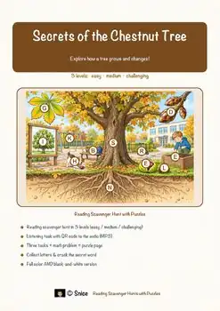
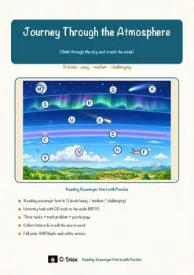
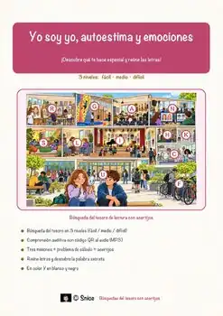
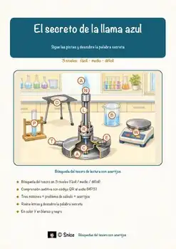
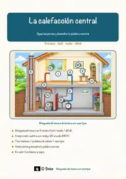
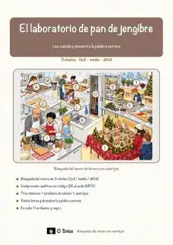
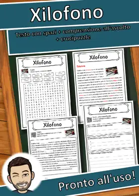
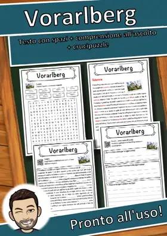

Autres langues
Cette page ne montre que des ressources en français. Tu trouveras ici mes ressources en anglais, en espagnol, en italien et en allemand.
DE
Deutsch
Plus de 6.600 ressources en allemand avec corrigé, disponibles sur eduki.
Aller à la page en Deutsch →EN
English
Lectures, rallyes-lecture et ateliers de maths en anglais, disponibles sur TpT. · 4.694 ressources
Aller à la page en English →
Chestnut Tree Reading Comprehension Passages | Science Scavenger Hunt 5-6
Bunsen Burner Reading Comprehension Passages | Science Scavenger Hunt 7-8

Atmosphere Layers Reading Comprehension Passages | Science Scavenger Hunt 7-8
Cookie Baking Reading Comprehension Passages | Life Skills Scavenger Hunt 5-6
ES
Español
Lectures et rallyes-lecture en espagnol, disponibles sur eduki et TpT. · 3.392 ressources
Aller à la page en Español →
«Yo soy yo, autoestima y emociones» – Búsqueda del tesoro de lectura

«El secreto de la llama azul» – Búsqueda del tesoro de lectura

«La calefacción central» – Búsqueda del tesoro de lectura

«El laboratorio de pan de jengibre: Geometría entre moldes, medidas y casas» – Búsqueda del tesoro de lectura
IT
Italiano
Fiches en italien avec texte à trous, compréhension orale et mots mêlés, disponibles sur eduki. · 2.659 ressources
Aller à la page en Italiano →
Xilofono – Scheda didattica classe quarta e quinta: testo con spazi vuoti e crucipuzzle
Wilderness – Scheda didattica classe quarta e quinta: testo con spazi vuoti e crucipuzzle
Walhalla – Scheda didattica classe quarta e quinta: testo con spazi vuoti e crucipuzzle
